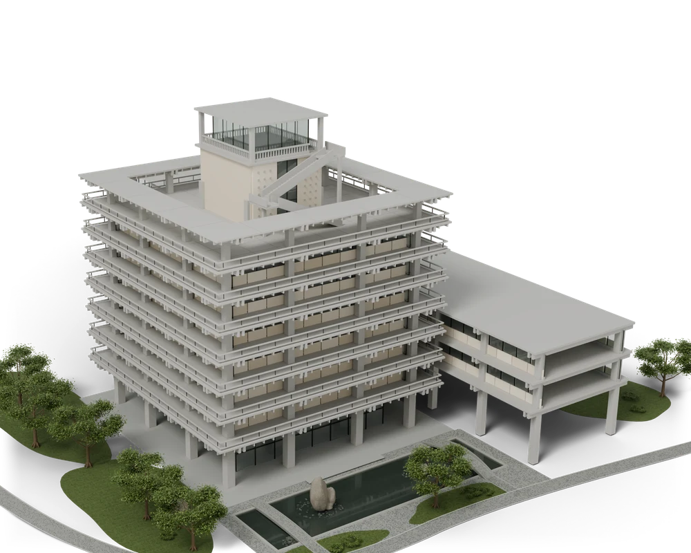

01 / КОНСТРУКЦИЯ
От структуры
к материалу.
Тёплая минеральная поверхность проявляется снизу вверх, сохраняя ритм и характер здания.
Свайп вверх по зданию — следующий этап.
Вниз — вернуться.
Готово к переходу

Подготавливаем переход…